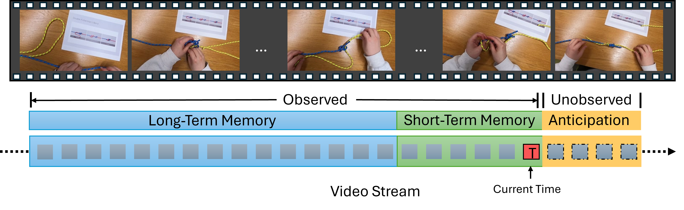
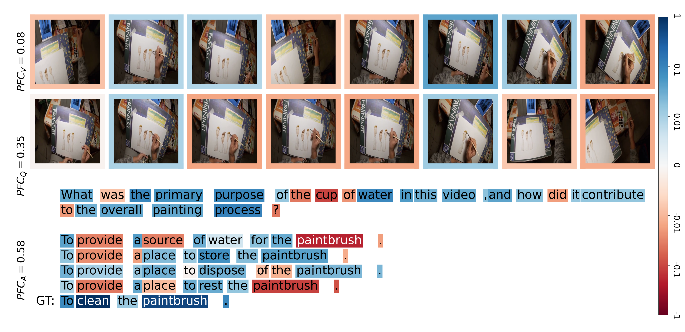
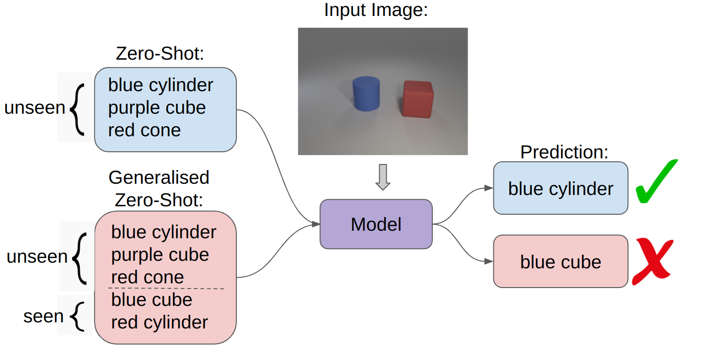
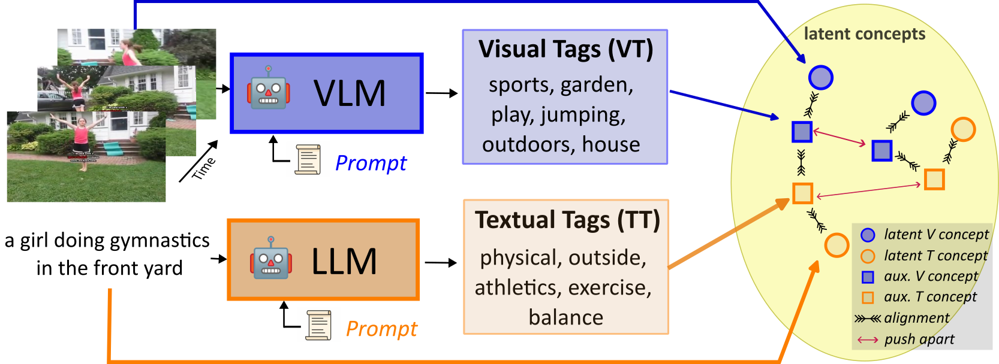

Michael Wray
Assistant Professor of Computer Vision
I am a lecturer/Assistant Professor of Computer Vision at the School of Computer Science at the University of Bristol. My research interests are in multi-modal video understanding, particularly for egocentric videos — focusing on how both vision and language can be tied together towards tasks such as cross-modal retrieval, grounding and captioning. I am part of MaVi and ViLab. Short Bio.
Email: michael (dot) wray (at) bristol (dot) ac (dot) uk
News
- December 2025 - WACV Paper on ArXiv Our paper: "From Detection to Anticipation: Online Understanding of Struggles across Various Tasks and Activities" that will be presented at WACV is now on ArXiv.
- November 2025 - Successful PhD Defence Congratulations to Shijia for passing their PhD defence!
- November 2025 - Successful PhD Defence Congratulations to Kevin for passing their PhD defence!
- November 2025 - Two Papers Accepted at WACV Congratulations to Shijia and Wiktor. Papers will be on ArXiv soon!
- October 2025 - New Paper on ArXiv Our paper: "A Video Is Not Worth a Thosand Words" is now on ArXiv, Website, ArXiv.
- October 2025 - New Paper on ArXiv Our paper: "EvoStruggle: A Dataset Capturing the Evolution of Struggle across Activities and Skill Levels" is now on ArXiv, Dataset, ArXiv.
- August 2025 - Paper Accepted at *SEM 2025 Our paper: "Evaluating Compositional Generalisation in VLMs and Diffusion Models" has been accepted at *SEM, ArXiv.
- August 2025 - Paper Accepted at BMVC 2025 Our paper: "Leveraging Modality Tags for Enhanced Cross-Modal Video Retrieval" has been accepted at BMVC, ArXiv.
For a full list of News, click here.
Research
Short list of recent Research Projects, click here for a full list.
|  |
From Detection to Anticipation: Online Understanding of Struggles across Various Tasks and Activities
Shijia Feng, Michael Wray, Walterio Mayol-Cuevas WACV, 2026 [arXiv] |
 |
A Video Is Not Worth a Thousand Words
Sam Pollard, Michael Wray ArXiv, 2025 [Website] [arXiv] [Code] |
 |
Evaluating Compositional Generalisation in VLMs and Diffusion Models
Beth Pearson, Bilal Boulbarss, Michael Wray, Martha Lewis *SEM, 2025 [arXiv] [Code] [Dataset] |
 |
Leveraging Modality Tags for Enhanced Cross-Modal Video Retrieval
Adriano Fragomeni, Dima Damen, Michael Wray BMVC, 2025 [arXiv] |

|
EvoStruggle: A Dataset Capturing the Evolution of Struggle across Activities and Skill Levels
Shijia Feng, Michael Wray, Walterio Mayol-Cuevas ArXiv, 2025 [arXiv] [Dataset] |

|
Are you Struggling? Dataset and Baselines for Struggle Determination in Assembly Videos
Shijia Feng, Michael Wray, Brian Sullivan, Youngkyoon Jang, Casimir Ludwig, Iain Gilchrist, Walterio Mayol-Cuevas IJCV, 2025 [arXiv] [Dataset] |
For a full list of Research projects, click here.
Short Bio
Michael is a lecturer in Computer Vision at the School of Computer Science at the University of Bristol. He finished his PhD titled "Verbs and Me: an Investigation into Verbs as Labels for Action Recognition in Video Understanding" in 2019 under the supervision of Professor Dima Damen. After, he stayed in the same lab as a Post-Doc working on Vision and Language and the collection of the Ego4D Dataset. Michael has led the organisation EPIC workshop series from 2021 onwards, is an organiser of the Ego4D workshop series, and is an ELLIS member.Teaching
- Applied Deep Learning 22/23, 23/24, 24/25, 25/26. Webpage.
- Computer Systems A 22/23. 23/24, 24/25, 25/26. Webpage.
- Individual Projects 22/23. 23/24, 24/25. Webpage.
People
Current
- Adriano Fragomeni: PhD, 2020–Current (w/ Dima Damen)
- Kevin Flanagan: PhD, 2021–Current (w/ Dima Damen)
- Shijia Feng: PhD, 2022–Current (w/ Walterio Mayol Cuevas)
- Sam Pollard: MEng, PhD, 2023–Current
- Beth Pearson: PhD, 2023–Current (w/ Martha Lewis)
- Fahd Abdelazim: PhD, 2024–Current
Previous
- Alyssa Boisse: MEng, 2025
- Isabel Mendes Rodrigues: BSc, 2025
- Amr Khaled Mohamed El-Sawy: BSc, 2025
- Jacob Seaborn: MEng, 2025
- Aleksandra Walusiak: MEng, 2025
- Richa Banthia: MEng, 2024
- Alex Elwood: MEng, 2024
- Moise Guran: MEng, 2024
- Rahat Mittal: BSc, 2024
- Bence Szarka: MEng, 2024
- Lee Tancock: MEng, 2023
- Zac Woodford: MEng, 2023
- Benjamin Gutierrez Serafin: MSc, 2020
- Pei Huang: MSc, 2016
Misc.
Presentations
- BMVA Summer School Egocentric Vision Lecture 2025, 2024, 2023, 2022.
- VIViD Research Seminar, Durham University Fine Grained Video Understanding from a Personal Perspective. 2024.
- Advancements in Time Series Analysis for Computer Vision: Techniques, Applications, and Challenges Unlocking the Temporal Dimension from the Egocentric Perspective 2024.
- Video Understanding Symposium 2022 Do we still need Classification for Video Understanding? 2022.
- BMVA Symposium: Robotics Meets Semantics Towards an Unequivocal Representation of Actions. 2018.
- EPIC@ECCV2016 SEMBED: Semantic Embedding of Egocentric Action Videos. 2016.
Workshop Organiser
- WINVU@: CVPR2024
- EPIC@: ICCV2021, CVPR2021, ECCV2020
- Joint Ego4D+EPIC@: CVPR2023, CVPR2022
- Ego4D@: ECCV2022
Area Chair
- CVPR: 2025, 2024, 2023
- ECCV: 2024
- NeurIPS: 2025, 2024
Associate Editor
- IET Computer Vision 2024–Current
- ToMM Special Issue on Text-Multimedia Retrieval 2024
Outstanding Reviewer
- BMVC2024
- ECCV2022
- ICCV2021
- CVPR2021
- BMVC2020
Reviewing Duties
Conferences
- AAAI: 2026
- ACM-MM: 2025
- ACCV: 2024, 2022, 2020
- BMVC: 2025, 2024, 2023, 2022, 2021, 2020, 2019
- CVPR: 2022, 2021, 2020, 2019
- ECCV: 2022
- ICCV: 2025, 2023, 2021
- NeurIPS: 2023
- NeurIPS D&B Track: 2024, 2023
- WACV: 2026, 2024, 2023, 2022, 2021
Journals
- TPAMI
- IJCV
- TCSVT
- Pattern Recognition
- TOMM